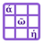

Digite assim, veja assimType this, get this
O primeiro verso da Ilíada, digitado no teclado do computador em Beta Code (ou no teclado grego na tela). The first line of the Iliad, typed on your computer keyboard in Beta Code (or on the on-screen Greek keyboard).
mh=nin a)/eide qea/Tudo o que você precisa para o gregoEverything you need for Greek
Funciona sem internet. A tradução com IA é opcional. Works offline. AI translation is optional.
Teclado politônicoPolytonic keyboard
Teclado na tela com todos os diacríticos, ou Beta Code no seu teclado físico, com dicas para 16 tipos de teclado. On-screen keyboard with every diacritic, or Beta Code on your physical keyboard, with hints for 16 layouts.

Quadro de caracteresCharacter chart
Todas as letras já acentuadas, a um clique.Every accented letter, one click away.
TransliteraçãoTransliteration
Automática, no padrão acadêmico, enquanto você escreve.Automatic academic transliteration as you write.
DicionárioDictionary
Busque em grego, Beta Code, transliteração ou no seu idioma. Clique numa palavra do texto para consultá-la e crie os seus próprios verbetes. Search in Greek, Beta Code, transliteration or your language. Click a word in your text to look it up, and add your own entries.
TraduçãoTranslation
Glosa aproximada palavra por palavra, sem internet, ou tradução com IA, se você quiser. Offline word-by-word gloss, or AI translation if you want it.
Expressões comunsCommon expressions
Saudações, juramentos, espanto, máximas e Novo Testamento, destacados no seu texto. Greetings, oaths, surprise, maxims and New Testament phrases, highlighted in your text.
12 idiomas12 languages
Português · English · Español · Français · Deutsch · Italiano · Русский · 中文 · العربية · Ελληνικά · 日本語 · 한국어
Tutorial guiadoGuided tour
Um passeio pela janela mostra para que serve cada parte. E há tema escuro para estudar à noite. A tour of the window shows what each part does. Plus a dark theme for late-night study.
Veja o PloionSee Ploion


No celular, no tablet e no navegadorOn your phone, tablet and browser
A versão web funciona em qualquer aparelho e pode ser instalada como um aplicativo, com ícone próprio e sem precisar de internet depois. The web version works on any device and can be installed like an app, with its own icon and no internet needed afterwards.
Android
Abra o Ploion no Chrome, toque no menu ⋮ e em “Instalar app”. Open Ploion in Chrome, tap the ⋮ menu and “Install app”.
iPhone / iPad
Abra o Ploion no Safari, toque em Compartilhar e em “Adicionar à Tela de Início”. Open Ploion in Safari, tap Share and “Add to Home Screen”.
Sobre a tradução com IAAbout AI translation
É opcional e vem desligada. Se quiser, você pode pedir traduções a um serviço de IA de terceiros (Claude, ChatGPT, Gemini, DeepSeek, Qwen, Kimi, outro compatível ou uma IA local) com a sua própria chave de API, que fica só no seu computador. Antes de ligar, o Ploion avisa para qual empresa e país o texto será enviado. It is optional and off by default. If you like, you can ask a third-party AI service (Claude, ChatGPT, Gemini, DeepSeek, Qwen, Kimi, another compatible service or a local AI) for translations using your own API key, which stays on your computer. Before it is turned on, Ploion tells you which company and country the text will be sent to.
O dicionário e as expressões incluídos foram gerados como ponto de partida e estão sendo revisados. The included dictionary and expressions were generated as a starting point and are being reviewed.
Apoie o PloionSupport Ploion
O Ploion é gratuito e sem anúncios. Se ele ajuda nos seus estudos, que tal me pagar uma feijoada? Qualquer valor ajuda a manter o projeto navegando. Ploion is free and ad-free. If it helps your studies, how about buying me a feijoada (Brazil's beloved bean stew)? Any amount helps keep the project sailing.
Do Brasil: PixFrom Brazil: Pix
Aponte a câmera do app do seu banco. Ou use a chave aleatória:
Scan with your Brazilian banking app, or use the random key:
5ed9d39b-e7fe-4647-b178-70e0762ee59d